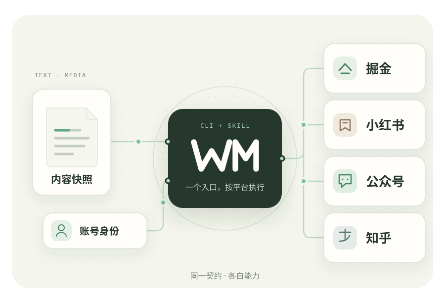

BUILT FOR YOUR AI {{VERSION}}
一份内容，
不止一个舞台。
你负责表达。让 AI 通过 wm 处理排版、配图、草稿与发布。一个通用核心，理解每个平台的不同。
本机运行 · 账号隔离 · MIT 开源

01
登录之后，交给 AI后台操作由 CLI 完成，验证时提示你扫码。
02
发布前，先看清楚冻结内容与图片，审阅各平台实际产物。
03
每一步，都有回执结果未知时先回查，保留原任务继续处理。
COMMAND STUDIO / 命令工作台
把你的想法，变成下一步。
选择平台和操作，获得可以直接使用的命令。
本页只生成示例，实际操作在你的电脑上执行。
2 交给你的 AI生成示例
正在读取 CLI 契约…
TERMINAL
需要更多平台选项？
用 schema 查看真实字段，再将选项写入 JSON 文件，通过 --options options.json 传入。AI 会读取平台指导和实际契约。
PLATFORM EXPLORER / 能力浏览器
通用的流程，
各有所长的平台。
直接读取当前版本的注册契约。
不支持的能力不会伪装成可用。
“已实现”表示已注册实际处理器。离线测试、线上读取与线上写入分别列出；测试通过不等于线上发布验收通过。账号权限以登录后的能力探测为准。
RECOVERY LAB / 恢复实验室
断线了，也不从头再来。
一次交互演示，看看 wm 如何处理不确定结果。
演示数据与真实账号无关。
交互演示draft.create → article.publish
- ✓冻结内容正文、图片与账号身份已固定
- ✓保存草稿已获得草稿 ID，后续沿用
- ?提交发表请求发出后断线，结果未知
- 4核对当前状态历史执行与当前观察分别记录
这时回查得到了什么？
GET STARTED / 从这里开始
一个入口，就叫 wm。
Node.js 22.16+，建议使用兼容的 LTS。
当前提供源码安装，npm 发行状态以仓库为准。
从 master 安装
git clone --branch master https://github.com/Ganzhib/wemedia-cli.git cd wemedia-cli npm ci npm link wm doctor --json wm skill status --json
首次登录会自动准备浏览器。你完成平台登录，AI 负责后续操作。